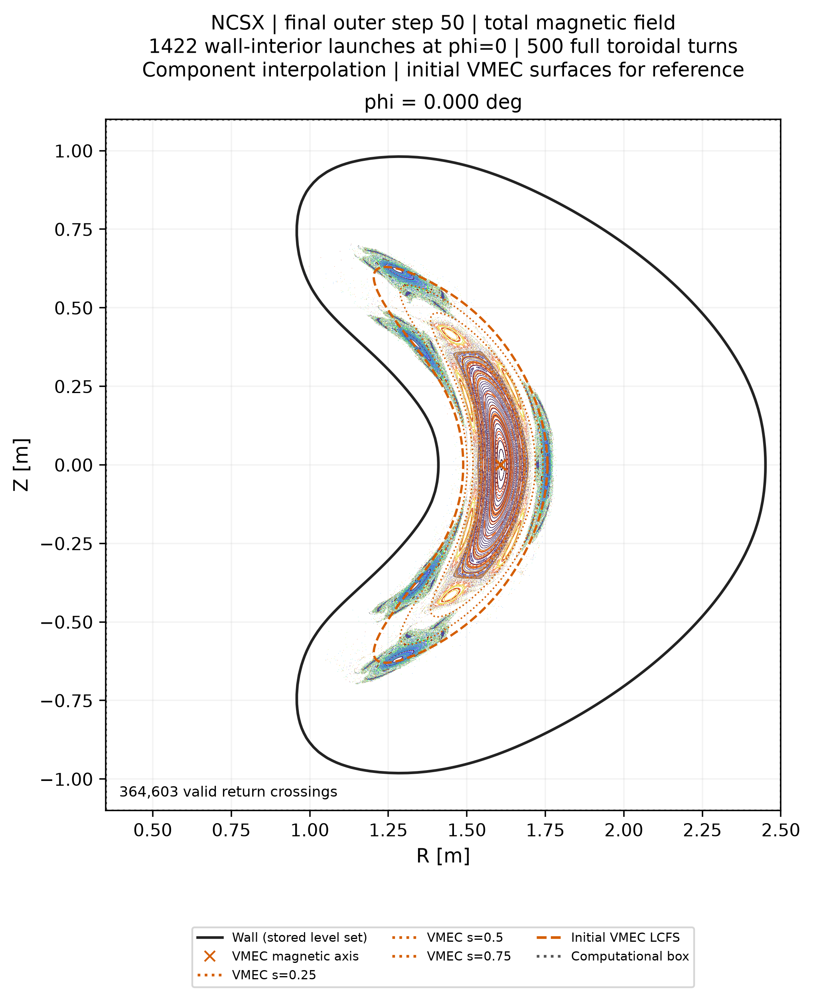
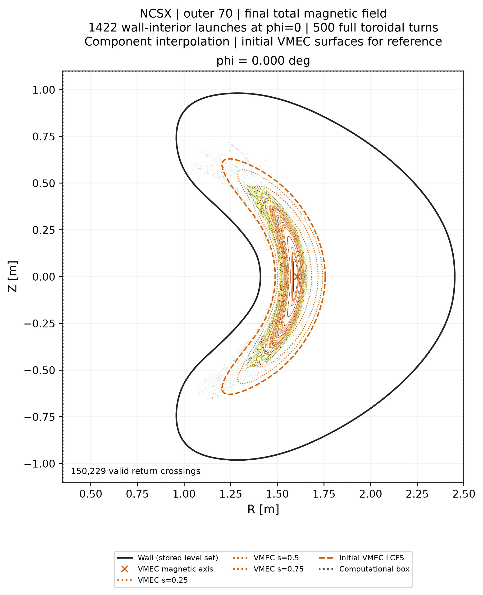
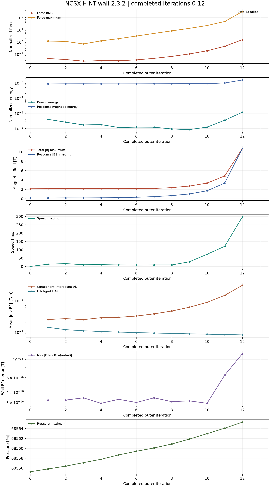
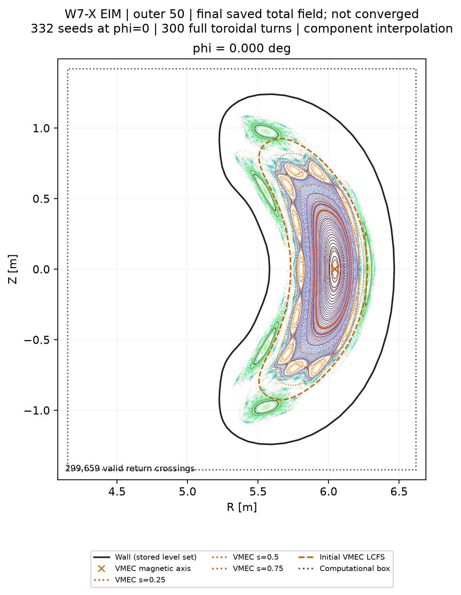

HINT
程序手册
HINT-debug 2.3.0 / HINT-wall 2.3.2
版本清单
物理模型、数值方法、输入参数、输出与后处理。
算例
-

结果NCSX · HINT-debug · VMEC 启动
第 50 步结果、初始庞加莱图与三维输入几何。
-

NCSX · HINT-debug · 零启动
20 步压强攀升、续算至第 70 步与初始真空场。
-

NCSX · HINT-wall · VMEC 启动
第 0–12 步演化与第一壁法向场；第 13 步中止。
-

结果W7-X EIM · HINT-debug · VMEC 启动
自由边界 VMEC 复现、三维输入几何与第 50 步结果。